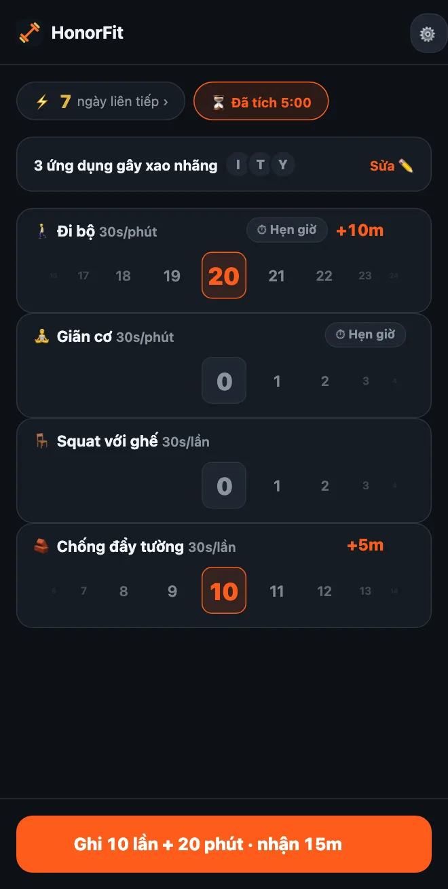

Không hít đất được? Các bài tập nhẹ nhàng để mở khóa ứng dụng
Chào mọi người! HonorFit chủ yếu được biết đến là một app chặn ứng dụng bằng hít đất: app của bạn bị khóa cho tới khi bạn tập vài lần và tự ghi lại. Nhưng nếu cổ tay, vai hay đầu gối của bạn không ưa chuyện đó, hoặc bạn ngồi bàn giấy cả ngày, hoặc dạo này hít đất là chuyện không thể, thì cũng hoàn toàn ổn.
Với mình, hít đất chưa bao giờ là mục đích chính. Mục đích là một cái gờ giảm tốc nho nhỏ giữa bạn và màn hình lướt vô tận, mà tình cờ lại tốt cho bạn. Một vòng đi bộ quanh khu nhà cũng làm được y như vậy. Đây là cách thiết lập HonorFit xoay quanh những thứ bạn thật sự tập được.
Bắt đầu với những bài có sẵn
Ngay từ đầu bạn đã có bốn bài tập sẵn: hít đất, gập bụng, hít xà và squat. Trong số đó, squat là nhẹ nhàng nhất, và mỗi lần được 30 giây.
Mà vì đây là cơ chế tự giác, chẳng ai kiểm tra một cái squat trông ra sao. Nếu squat hết tầm là quá sức, thì đứng dậy khỏi ghế rồi ngồi xuống lại cũng tính. Hít đất cũng vậy, chống tay vào tường hay mép bàn bếp là được. Bạn quyết định một lần tập là gì, và chỉ cần ghi lại thật lòng.
Tự chọn bài của bạn (miễn phí tới 3 bài)
Từ phiên bản 1.15.0, bạn có thể đổi tên và xóa bài tập, chỉnh mỗi bài được bao nhiêu thời gian, và thêm tối đa 3 bài của riêng mình, tất cả đều miễn phí. Pro ($3 một tháng hoặc $19,99 trả một lần ở Mỹ; giá thay đổi theo quốc gia và đơn vị tiền tệ, và store sẽ hiện giá ở chỗ bạn) cho bạn thêm bao nhiêu tùy thích. Bạn vào từ bánh răng ở màn hình chính, rồi chạm thẻ Bài tập. Mình đã viết từng bước dùng trình chỉnh sửa ở đây. Còn đây là những kiểu bài mình sẽ cân nhắc.
Buổi tập theo phút (ghi bằng phút)
Chuyển bất kỳ bài nào sang Phút, hoặc chạm một gợi ý có ⏱. Những bài hợp ở đây:
- 🚶 Đi bộ. Bài mình thích nhất cho chuyện này. Chắc là cách dễ ăn điểm nhất rồi.
- 🧘 Yoga hoặc 🤸 Pilates, hoặc thêm một bài tên Giãn cơ nếu đó đúng hơn với những gì bạn tập.
- 🏊 Bơi và 🚴 Đạp xe, cả hai đều nhẹ nhàng với các khớp.
- 🪷 Thiền. Không phải tập thể dục, nhưng có trong danh sách, và mười phút yên tĩnh đổi lấy mười phút TikTok là một vụ trao đổi khá hời.
Buổi tập theo phút bắt đầu ở 30 giây dùng app cho mỗi phút, nên đi bộ 20 phút được 10 phút. Bánh xe đếm số phút tròn, tối đa 100 phút mỗi lần.
Động tác tập tại bàn (ghi bằng lần)
Chạm ＋ Thêm bài tập và gõ tên. Vài bài tập được ở văn phòng hay trong căn hộ nhỏ, không cần dụng cụ:
- Squat với ghế (đứng lên ngồi xuống): đứng dậy khỏi ghế, rồi ngồi xuống lại.
- Chống đẩy tường hoặc chống đẩy với bàn: chống đẩy dựa vào tường hoặc một cái bàn chắc chắn. Mặt tựa càng cao thì càng dễ.
- Nhón gót: kiễng lên mũi chân, rồi hạ xuống. Tập được trong lúc chờ lò vi sóng.
- Dậm chân tại chỗ: chính là gợi ý Nâng cao đùi, chỉ là chậm hơn. Muốn thì đổi tên luôn.
- Cầu mông và kegel: yên lặng, không cần dụng cụ, và bạn có thể tập kegel trong cuộc họp mà không ai biết. Mình có viết hẳn một bài về hai bài này.
Bài giữ tư thế (plank, ngồi dựa tường)
Vì bánh xe phút chỉ đếm số phút tròn, plank 20 giây không hợp lắm ở đó. Mình sẽ để các bài giữ tư thế ở Lần và tự quyết định một lần nghĩa là gì, kiểu “giữ 20 giây là một lần”. Plank và Ngồi dựa tường đều có trong phần gợi ý.
Mỗi bài nên được bao nhiêu?
Bài tập mới bắt đầu ở 30 giây mỗi lần. Bạn tăng giảm được mỗi bước 5 giây. Vài gợi ý để bắt đầu:
| Bài tập | Tính theo | Được | Ví dụ |
|---|---|---|---|
| 🚶 Đi bộ | Phút | 30 giây mỗi phút | Đi bộ 20 phút = 10 phút |
| 🧘 Giãn cơ | Phút | 30 giây mỗi phút | 10 phút = 5 phút |
| 🪑 Squat với ghế | Lần | 30 giây mỗi lần | 10 lần = 5 phút |
| 🧱 Chống đẩy tường | Lần | 30 giây mỗi lần | 10 lần = 5 phút |
| Nhón gót | Lần | 10–15 giây mỗi lần | 20 lần, mỗi lần 15 giây = 5 phút |
| Plank | Lần (1 lần = giữ 20 giây) | 1 phút mỗi lần | Giữ 3 lần = 3 phút |
Đây chỉ là mức mình đoán là công bằng. Con số đúng là con số bạn sẽ chịu trả thật thay vì ăn gian. Nếu đi bộ là thói quen bạn muốn xây nhất, hãy cho nó giá trị cao hơn, như 1 phút mỗi phút.

Vài thiết lập để bạn lấy dùng luôn
- Ngày ngồi bàn: Squat với ghế, Chống đẩy tường, Nhón gót, Đi bộ.
- Nhẹ nhàng: Đi bộ, Giãn cơ, Squat với ghế, Chống đẩy tường (chính là ảnh chụp màn hình ở trên).
- Thư thái: Đi bộ, Yoga, Thiền.
- Căn hộ yên tĩnh: Cầu mông, Kegel, Squat với ghế, Đi bộ.
Mình sẽ giữ ở ba hoặc bốn bài, vì mỗi bài có một bánh xe riêng ở màn hình chính. Ở bản miễn phí, bạn có thể có đủ bốn bài bằng cách đổi tên các bài có sẵn (Squat thành Squat với ghế, Hít đất thành Chống đẩy tường) và thêm phần còn lại làm 3 bài của riêng bạn.
Và nếu bạn đang bị chấn thương, bị đau, hoặc có vấn đề sức khỏe, hãy hỏi bác sĩ hoặc chuyên viên vật lý trị liệu xem bài nào ổn với bạn. Mình làm app chặn ứng dụng, không phải người nên hỏi về đầu gối của bạn đâu haha.
HonorFit Blocker là app chặn ứng dụng miễn phí cho iPhone và Android. Cơ chế tự giác, không camera, không có gì rời khỏi điện thoại của bạn. Buổi tập theo phút và tối đa 3 bài tập tùy chỉnh đều miễn phí; Pro thì không giới hạn. App không dành cho tất cả mọi người, nhưng biết đâu vài bạn sẽ thích nó!